estuda elementos geométricos em um sistema de coordenadas num plano ou espaço. Estes objetos geométricos são determinados por sua localização e posição em relação a pontos e eixos deste sistema de orientação.
O Sistema Cartesiano Ortogonal é uma base de referência para localização de coordenadas.

A origem O (0,0) deste sistema é a intersecção destes eixos.
•O eixo x é o das abscissas.
•O eixo y é o das ordenadas.
•A orientação anti-horária dos quatro quadrantes.
A distância entre dois pontos no plano cartesiano é o comprimento do segmento que une estes dois pontos.
Distância = √((x2 - x1)² + (y2 - y1)²)
Para determinar o ponto médio de um segmento de reta, basta fazer a média aritmética das coordenadas
Bom, esse último conteúdo não foi muito bem estudado por falta de tempo, entendi apenas oque eu já sabia sobre planos cartesianos, e saber programar jogos em 3d ajudou a entender a questão dos pontos no espaço, é um conteúdo de fácil compreensão mas difícil de estudar, principalmente na parte de calcular os pontos no plano. Por fim, Obrigado por estar até aqui e fique com o video explicativo do conteúdo: